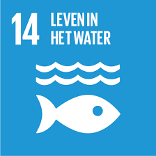
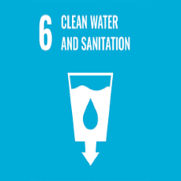
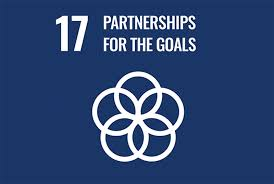

濕地是生物多樣性的重要棲息地，支持著許多獨特的植物和動物。
濕地中生長著各種水生植物，如岸苔和水藺草，這些植物為生物提供棲息地。
濕地是多種鳥類、兩棲類及水生生物的棲息地，為它們提供豐富的食物資源。
濕地在生態系統中扮演著重要角色，幫助調節水質和水循環，保持生態平衡。
我們的工作秉持可持續發展的理念，致力於實現聯合國可持續發展目標。
我們積極推動各項環保倡議，減少活動過程中的碳足跡，保護濕地生態。
透過社區活動，我們鼓勵民眾參與環保行動，提升社會對可持續發展的認識。
我們進行生態研究與環境監測，確保濕地生態系統的健康與持續性。